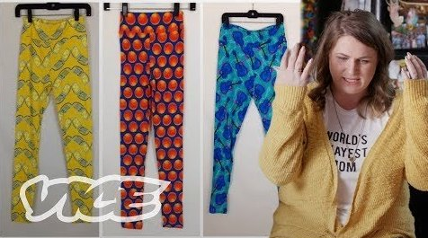

HONESTY IN ADVERTSING
Social media platforms have become one of the most effective ways for brands to promote their products. With the use of targeted ads, or the "influencer's" influence on their audience, brands are able to promote themselves through friendship. Advertisements and product placements are casually slipped into YouTube or Instagram posts so discreetly that sometimes its hard to even know you're looking at an advertisement. When someone sees a sponsored YouTube video, it feels like their friend is reccomending the product to them, rather than an advertisement being pushed in their face.
Many YouTubers and influencers have been been put in hot water by their audience for either doing too many sponsored posts, or advertising unreliable brands that make them come across as a "sell-out" to their audience. Many fulltime influencers struggle with finding a balance between a steady income, and a maintaining a trusting relationship with the audience.
Many YouTubers and influencers have been been put in hot water by their audience for either doing too many sponsored posts, or advertising unreliable brands that make them come across as a "sell-out" to their audience. Many fulltime influencers struggle with finding a balance between a steady income, and a maintaining a trusting relationship with the audience.

TIFFANY FERGUSON
Tiffany Ferguson is an online content creator, mainly known for her presence on YouTube. Her videos center around the internet and social media and the corrupt or deceitful trends that occur on it. Some of her most popular videos include, “The Normalization of Facetune is Problematic”, “YouTubers Promoting Sketchy Products”.
In a recent video titled “The MLM 'Girl Boss' Narrative is a Lie”, Tiffany discusses how Multi Level Marketing companies have been scamming people for years, but now use social media to their advantage when it comes to recruitment, using the idea of friendship to sell product, and making easy money from home.
Tiffany discusses her thoughts on MLM’s and similar brands that are on the extreme side of being deceitful and "scammy", and how she lies on the other end of the spectrum. She still need to have a form of income, but she needs to be a lot more selective of the products she promotes because of the trust and personal connection she wants to maintain with her audience.
In a recent video titled “The MLM 'Girl Boss' Narrative is a Lie”, Tiffany discusses how Multi Level Marketing companies have been scamming people for years, but now use social media to their advantage when it comes to recruitment, using the idea of friendship to sell product, and making easy money from home.
Tiffany discusses her thoughts on MLM’s and similar brands that are on the extreme side of being deceitful and "scammy", and how she lies on the other end of the spectrum. She still need to have a form of income, but she needs to be a lot more selective of the products she promotes because of the trust and personal connection she wants to maintain with her audience.
WHAT IS AN MLM?
Multi-level marketing (MLM's), also called pyramid selling, are companies with a marketing strategy for the sale of products or services where the revenue of the MLM company comes from a non-salaried workforce selling the company's products. Employees are istructed to pay for inventory with their own money, and it is up to them to sell and recruit others to work below them.